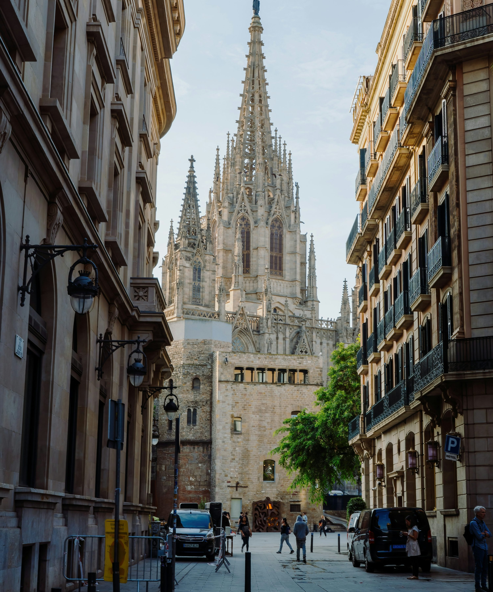
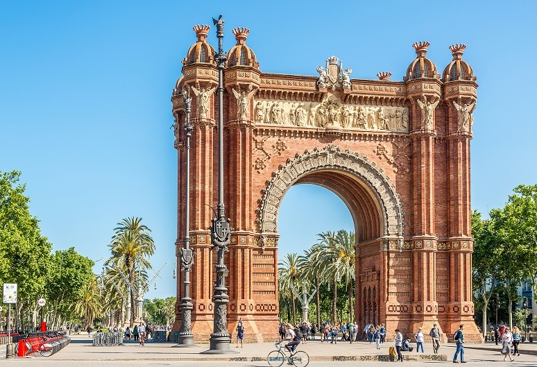
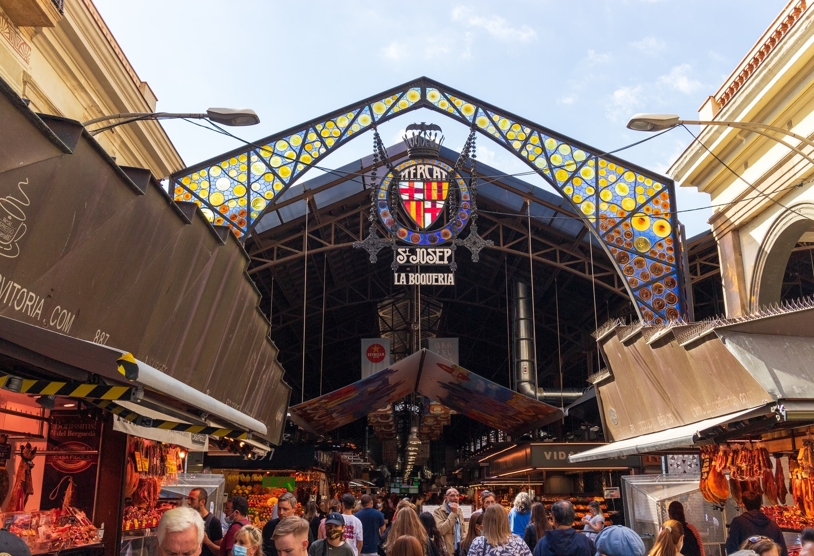
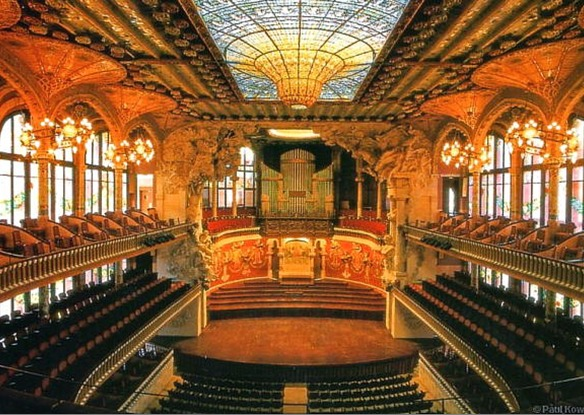
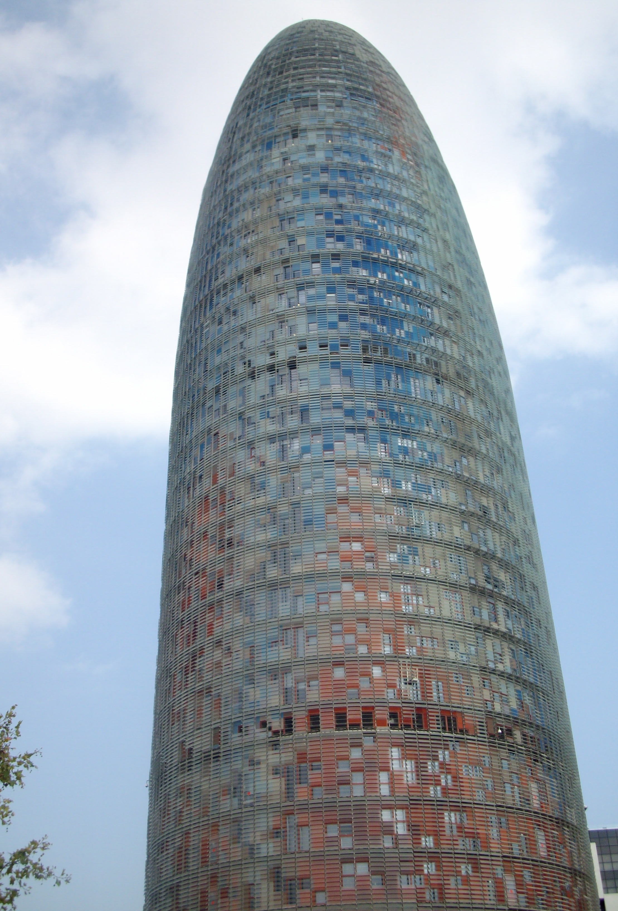
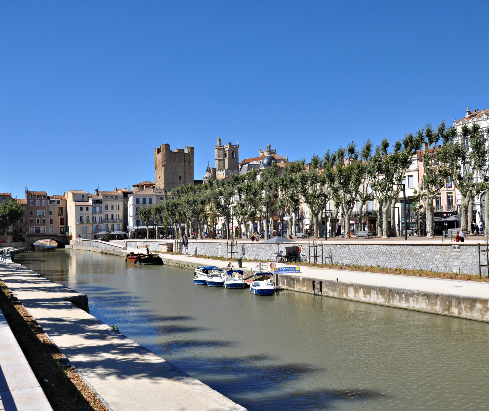

Une découverte culturelle, gourmande et méditerranéenne
« Regards croisés »
« Regards croisés »
Un format court, pensé pour profiter de la ville sans transformer l'escapade en course contre la montre.

Trajet aller · Lérida · Barcelone
L'idée : commencer doucement, sans programme lourd dès l'arrivée. Une journée de liaison, mais pas une journée perdue.


Une journée très « VPDVOYAGES » : Culture, gastronomie, quartiers vivants et temps pour soi.

Barcelone · Narbonne · retour

Ce qui fait la différence
Le programme donne un fil conducteur, mais laisse volontairement des espaces pour vivre Barcelone : un café, une sieste, une terrasse, une boutique, une plage ou une découverte imprévue.
Un séjour volontairement équilibré : les incontournables, mais aussi des quartiers, des ambiances et du temps pour profiter.
VPDVOYAGES ne se contente pas d'aligner des visites. L'objectif est de construire un séjour cohérent, fluide et personnel : des lieux emblématiques, des adresses choisies, des expériences locales et suffisamment de liberté pour que chacun puisse s'approprier Barcelone.
Barcelone, autrement : moins de cases à cocher, plus de moments à vivre.